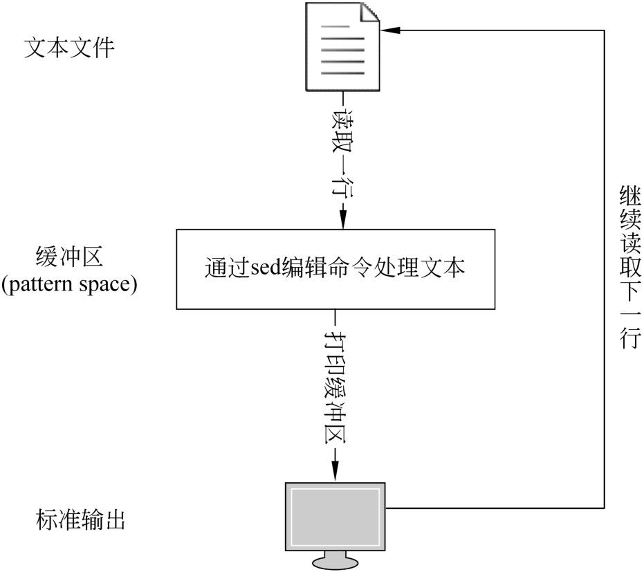

第10章
流编辑
在第9章中，我们已经介绍了许多处理文本的命令，但是，Shell所提供的文本处理工具还有许多，可以说是应有尽有。在这众多的文本处理工具中，其中有一类称为流编辑器的工具却不得不提。流编辑器在处理文本中发挥着重要的作用，许多其他工具无法完成的工作，使用流编辑器可以非常方便地完成。本章将对Shell中的流编辑工具进行介绍。
本章主要涉及到知识点如下所述。
- 什么是sed：主要介绍什么是sed工具、sed工具的主要操作、工作方式，以及地址表示方法、在sed命令中使用正则表达式等。
- sed命令的常用操作：主要介绍sed命令的注释方法、打印文本、替换文本、删除文本、追加文本、插入文本、移到下一行、读写文件，以及多行模式等。
- 组合命令：主要介绍如何在sed中组合多条命令，以及如何将多条命令应用到一个地址范围等。
10.1 sed命令及其语法
sed命令是将一系列的编辑命令应用于一批文本的理想工具。sed命令拥有非交互式和高效的特点，可以为用户节约大量的时间。本节将介绍sed命令的基础知识。
10.1.1 sed命令以及语法
sed命令是一个非交互式的文本编辑器，它可以对来自文本文件，以及标准输入的文本进行编辑。其中，标准输入可以是来自键盘、文件重定向、字符串、变量或者是管道的文本。
sed命令会从文件或者标准输入中一次读取一行数据，将其复制到缓冲区，然后读取命令行或者脚本的编辑子命令，对缓冲区中的文本行进行编辑。重复此过程，一直到所有的文本行都处理完毕。如图10-1所示，描述了sed命令工作流程。
通常情况下，sed命令会适用于以下几种场合：
- 编辑一个非常大的文本文件，以至于使用普通的交互式编辑器非常慢。
- 编辑命令比较复杂，在普通的文本编辑器中难以完成。
- 扫描一个比较大的文本文件，并且需要经过一系列的操作。
sed命令编辑的文件是原始文件在缓冲区中的副本，因此编辑操作并不影响原来的文件，并且输出到屏幕。如果用户想要将处理结果保存下来，可以将输出重定向到一个磁盘文件中。

图10-1 sed命令工作流程
sed命令的基本语法如下：
在上面的语法中，options代表sed命令的选项，常用的选项如下所列。
- -n：取消默认输出。
- -e：允许执行多个脚本。
- -f：从脚本文件中读取命令。
- -i：直接修改原始文件。
- -l：指定行的长度。
- -r：在脚本中使用扩展正则表达式。
- -s：默认情况下，sed将把命令行指定的多个文件名作为一个长的连续的输入流。而GNU sed则允许把它们当做单独的文件，这样的话，正则表达式不进行跨文件匹配。
- -u：最低限度的缓存输入与输出。
script参数表示sed脚本文件，用户可以将一系列的sed命令写在一个脚本文件中，sed会从该文件中读取并依次执行各个命令。inputfile表示输入文本文件，如果没有指定输入文件，则从标准输入中读取。
在上面的选项中，-n选项需要特别说明一下。前面已经讲过sed的工作流程。在开始处理文本之前，sed命令的缓冲区是空的。sed读入一行内容，删除尾部的换行符，存入到缓冲区中，然后执行相应的编辑命令。如果用户没有使用-n选项，在缓冲区中的内容会被输出到标准输出；如果用户使用了-n选项，则sed命令不会输出任何内容，而是直接读取下一行数据，重复上面的步骤。
在这里就会出现一个问题，如果用户想要在屏幕上输出sed命令的处理结果，应该怎么办？这就需要用到下面介绍的sed的编辑命令，sed的子命令p可以强制输出缓冲区的内容。
10.1.2 sed命令的工作方式
通常情况下，用户可以通过3种方式来使用sed命令，下面将分别进行介绍。
首先，用户可以在命令行直接执行sed命令，其基本语法如下：
在上面的语法中，commands表示sed的相关操作命令，例如打印文本、删除文件，以及插入文本等。
其次，用户可以将sed操作命令写入脚本文件，然后通过sed命令读取该文件并且执行其中的命令，其基本语法如下：
在上面的语法中，参数scirpt代表一系列的sed操作命令。
最后，用户通过将sed的操作命令写入文件，然后将该脚本文件授予用户执行权限。这样的话用户就可以直接执行文件，其基本语法如下：
其中，script代表保存sed命令的脚本文件。在前面已经讲过，在脚本文件中，用户应该在#!符号后面执行该脚本的解释器，因此在这种方式下，sed脚本文件的第一行应该如下：
 注意：在第2种方式中，用户不需要指定脚本的解释器，因为在调用的时候，已经指定使用sed命令载入并解释该文件。但是，在第3种方式中，用户必须指定解释器程序。
注意：在第2种方式中，用户不需要指定脚本的解释器，因为在调用的时候，已经指定使用sed命令载入并解释该文件。但是，在第3种方式中，用户必须指定解释器程序。
10.1.3 使用行号定位文本行
通常情况下，一个完整的sed命令由定位参数和编辑命令两部分组成。通过定位参数， sed命令可以对特定的文本行进行操作。sed命令提供了两种方式来实现文本行的定位，其一为行号定位，其二为正则表达式定位。下面首先介绍使用行号定位文本行。
1．定位某个特定的行
在sed命令中，指定某个特定的文本行的语法如下：
其中，x是一个整数，代表特定的文本行的行号。例如，现在想要定位到第10行，则可以使用以下语句：
2．定位某段连续的行
sed使用以下语法来指定某一段连续的文本行：
在上面的语法中，x表示起始行的行号，y表示终止行的行号。以上语法表示指定从x开始一直到y行的所有的文本行。
3．指定起始行和步长
在某些情况下，用户需要的不是一段连续的文本行，而是一段有固定间隔的行，例如偶数行、奇数行或者每隔3行等。在这种情况下，用户可以使用以下语法来指定文本行的步长：
在上面的语法中，first和step都是整数，其中first表示起始行，step表示行号增长的步长。
例如，如果要指定文本文件的偶数行，用户可以使用以下语句：
如果用户想要指定文本文件的奇数行，则可以使用以下语句：
4．指定文件的第一行和最后一行
指定文件的第一行比较简单，直接使用数字1即可，如下：
对于文件的最后一行，sed命令专门提供了一个操作符$。因此，指定文件最后一行的语句如下：
5．指定某行后面的几行
在sed命令中，用户可以采用相对定位的方法来指定行，如下：
以上语法表示指定从x行以及后面的n行文本。例如：
表示从第2行以及后面的5行，即第2～7行。
10.1.4 使用正则表达式定位文本行
除了使用行号定位文本行之外，sed命令还支持正则表达式定位。sed命令中，正则表达式的语法如下：
在上面的语法中，两个斜线之间的regexp表示正则表达式，其中，常用的正则表达式元字符如下所列。
- 一般字符：字符本身就匹配字符本身，例如/abc/就是定位包含abc的行。
- *：表示前置表达式重复了0次或者多次，例如，/a*/表示匹配字符a出现0次或者多次的情况。
- \+：与星号类似，但是该元字符匹配其前置表达式出现1次以上，属于扩展正则表达式。
- \?：匹配其前置表达式重复出现0次或者1次。
- \{i\}：类似于星号，但匹配前置表达式出现i次，如a\{3\}匹配aaa。
- \{i,j\}：匹配前置表达式最少出现i次，最多出现j次。例如，a\{1,2\}可以匹配a或者aa这两种情况。
- \{i,\}：匹配其前置表达式至少出现i次。
- .：匹配任意字符。
- ^：匹配行首字符。
- $：匹配行尾字符。
- []：匹配方括号中的任意单个字符。
- [^]：匹配不出现在方括号中的任意单个字符。
- \n：匹配换行符。
从上面的介绍可以得知，sed命令中的元字符的含义与前面介绍的正则表达式中的元字符基本相同。
注意：与正则表达式一样，如果要匹配元字符本身，需要使用转义字符。例如想要匹配字符*，则需要使用\*。
10.2 sed命令的常用操作
除了定位参数之外，sed命令的另外一个组成部分就是编辑命令。常用的编辑命令有打印、插入、删除，以及替换等，本节将介绍如何在sed命令使用这些编辑命令。
10.2.1 sed编辑命令基本语法
sed命令的基本语法如下：
在上面的语法中，address1和address2都称为位置参数，在10.1节中已经讲过，sed命令的位置参数可以使用两种方式来表示，分别为行号和正则表达式。位置参数的作用是用来限制sed编辑命令所影响的文本行的范围。如果某个sed命令没有提供位置参数，则表示对指定文本文件中的所有的文本行执行编辑操作；如果只有一个位置参数时，表示只对符合指定位置的文本行进行操作；如果有两个位置参数，则表示对从address1所表示的文本行开始，一直到address2所表示的文本行结束所包含的所有的文本行进行操作。
command表示sed所提供的子命令，用来实现编辑操作。argument则表示子命令的参数，例如替换命令s需要两个参数，分别为要查找的模式和用来替换的字符串。
注意：sed命令的两个位置参数可以同时使用行号或者正则表达式，也可以混合使用，即其中一个位置参数使用行号，另外一个位置参数使用正则表达式。
10.2.2 选择文本
在前面介绍正则表达式的时候，使用了grep及egrep等命令来对文本进行筛选。实际上sed命令也可以实现这个功能。在sed命令中，选择文本行主要通过位置参数来完成，基本语法如下：
在上面的语法中，address1和address2都是位置参数。如果省略位置参数，则表示选择整个文件。子命令p表示将缓冲区中的文本行执行输出操作，即打印（print）缓冲区中的文本。
注意：sed命令的缓冲区又称为模式空间（pattern space）。
【例10-1】演示使用行定位方法来选择输出某些文本行，其中使用的文本文件仍然是第9章中的students.txt。代码如下：
在上面的代码中，第5行没有使用-n选项来输出students.txt文件的第1～3行，第10行使用了-选项来打印同样的文本行。
该程序的输出结果如下：
在上面的执行结果中，横线上面的是不含有-n选项的sed命令的输出结果，横线下面是含有-n选项的sed命令的输出结果。分析输出结果中的文本行，可以发现在不使用-n选项的情况下，sed命令将文本文件的前3行输出了两次。之所以会出现这个结果，是因为sed命令首先会读取一行文本，然后自动将缓冲区中的该行文本输出到标准输出。接着执行sed的子命令，遇到p命令之后，该命令又会强制sed命令输出一次缓冲区中的文本。这样的话，导致了前面3行输出两次。而对于后面的其他的行，是sed命令的默认输出，没有受到位置参数的影响，所以只输出了1次。
当使用了-n选项之后，sed命令的默认输出被取消，所以只有受p子命令影响的前面3行被输出。
【例10-2】演示使用正则表达式来作为定位参数，代码如下：
在上面的代码中，第5行使用正则表达式/^20020017/来定位文本，表示以字符2开头，然后紧跟着字符串0020017的文本行，对于这些文本行执行定位参数后面的子命令p。
该程序的执行结果如下：
另外，还有一些特殊的情况，例如用户需要输出第一行，则可以使用以下命令：
其中，位置参数1表示第一行文本。
如果想要打印最后一行，则可以使用以下命令：
其中的位置参数$表示定位文本文件的最后一行。
如果想要输出奇数行，则可以使用以下命令：
其中的位置参数1～2表示从第一行开始，每隔两行。
同理，如果想要输出偶数行，则只要将上面的位置参数的1改为0即可，如下：
下面的命令的位置参数使用正则表达式和行号来表达：
在上面的命令中，第一个位置参数使用正则表达式/Abtul/表达，表示从含有字符串Abtul的文本行开始，第二个位置参数使用行号5表达，表示到第5行结束。
10.2.3 替换文本
使用sed命令，可以很方便地对文本文件中指定的文本进行替换操作。文本的替换需要使用s子命令，其语法如下：
在上面的语法中，address1与address2都是位置参数，关于它们的用法请参见前面的几个小节的介绍。在s命令中，位置参数通常会被省略，表示在所有的文本行中进行替换操作，其语法如下：
s子命令表示执行替换（substitute）操作。pattern为使用正则表达式表示的匹配模式， replacement为用来替换的由一般字符组成的字符串。
flag为替换标志，它的值会影响到s命令的行为，常用的选项有以下值。
- g：全局（global）匹配，会替换文本行中所有符合规则的字符串。
- 十进制数字：如果flag为一个十进制数字n，则表示替换文本行中第n个符合规则的字符串。
- p：替换第1个符合规则的字符串，并且将缓冲区输出到标准输出。
- w：替换第1个符合规则的字符串，并且将受影响的行输出到磁盘文件中。
- 空：如果没有指定flag，则表示替换文本行中的第1个符合规则的字符串。
【例10-3】演示使用s子命令替换文本的方法，代码如下：
在上面的代码中，第6行中的正则表达式为/e/表示匹配小写字母e，后面的E为用来替换的字符串。第12行使用了g选项来执行相同的替换。
该程序的执行结果如下：
通过分析上面的输出结果，可以发现，代码中第6行的sed语句只替换了每行中第一次出现的字母e，其他的字母e却没有被替换，例如Bennett中被替换成了BEnnett。但是代码中第12行的sed语句却替换了所有的小写字母e。
上面的两个例子都省略了位置参数，表示在所有的文本行中搜索匹配的模式。除此之外，用户可以指定sed命令搜索的文本行的范围，如下面的例子所示。
【例10-4】使用行号定位方法来定位文本行，代码如下：
在上面的代码中，第5行表示替换指定文本文件的1～3行中的所有的小写字母e为大写字母E，其余的文本行不受影响。
该程序的执行结果如下：
分析上面的输出结果，可以发现只有第1～3文本行中的小写字母e被替换，而其余的小写字母并没有被替换。这个例子说明了在上面的语句中，位置参数已经发挥作用。
前面已经介绍过，在sed命令中，位置参数的表示非常灵活，可以使用行号，也可以使用正则表达式，甚至还可以将这两种方式混合起来使用。
【例10-5】演示通过两种方式来定位文本行。第一个位置参数使用行号，而第二个位置参数则使用正则表达式来表示。代码如下：
在上面的代码中，第5行的位置参数为1,/^200200167/，其中，第1个位置参数为1，表示从第1行开始；第2个位置参数为正则表达式/^200200167/，表示到以字符2开头，并且后继为字符串00200167的文本行为止。
由于在students.txt文件中，符合上面的正则表达式的行恰好为第3行，所以【例10-5】的执行结果与【例10-4】完全相同。
对于用户来说，要使用好sed命令，必须学会灵活地运用正则表达式。下面再举一个更加实用的例子。作为开发人员，经常会遇到以下情况：对于一段HTML代码，如何将其中的HTML标记全部过滤掉。下面的例子就给出了一种解决方法。
假设有下面一段HTML代码需要用户处理：
【例10-6】使用sed命令结合正则表达式将上面HTML代码中的文本提取出来，代码如下：
用户需要特别注意代码第5行中正则表达式/<[^>]*>/，这个正则表达式所描述的匹配规则为：首先是一个左尖括号，在随后的文本中不会出现右尖括号，接下来是匹配任意多个任意字符，最后是一个右尖括号。因此，这个正则表达式会匹配<…>这样的字符串，并且左右两个尖括号之间不会出现另外的右尖括号。
另外，代码第5行的sed语句也需要进行说明，在这个语句中，并没有为sed命令提供第2个参数值，这意味着用空串来替换匹配的模式。
该程序的执行结果如下：
从上面的执行结果可以得知，所有的HTML标记全部被过滤掉了。
注意：在s命令中，各个参数之间并不一定要使用斜线/分隔，还可以使用除空格以及换行符之外的其他任意的字符，例如冒号或者分号等。总之，s命令会将紧跟在后面的那个字符作为参数分隔符。因此，下面的两条语句与【例10-6】中的第5行是等价的：
其中，第1条使用了冒号作为参数分隔符，第2条使用分号作为参数分隔符。
前面讲过，在s子命令中，作为替换的字符串中通常只包含一般字符。但是，如果替换字符串中含有字符&或者反斜线加上数字\n，其中n是一个1～9之间的数字，则表示引用子字符串。其中&符号表示引用匹配的模式，即在某个文本行中与模式相匹配的那部分子串；而\n表示第n个由圆括号括起来的子串。
【例10-7】演示&符号的使用方法，其中demo1.txt文件的内容如下：
本例代码如下：
在上面的代码中，第5行中的&表示引用模式string，因此每个文本行中第1个与模式string相匹配的子串都将被替换为long string这个字符串。
该程序的执行结果如下：
注意：由于【例10-7】中没有使用全局替换标志g，所以只会替换每个文本行中第1次匹配的子串。
【例10-8】演示使用\n的形式来引用模式中子串，代码如下：
在上面的代码中，第5行的匹配模式被圆括号分隔成4个子串，在后面的替换字符串中，\2表示引用第2个子串，即is，\1表示引用第1个子串，即This，\3和\4分别引用第3个和第4个子串，分别为a和string。
该程序的执行结果如下：
从上面的执行结果可以得知，【例10-8】重新排列了模式中的单词的次序。
注意：在使用\n的形式引用模式的子串时，不能定义9个以上的子串，因此n的取值为1～9。
10.2.4 删除文本
接下来介绍如何使用sed命令删除某些文本行。sed提供了d子命令来实现文本行的删除（delete），其语法如下：
在上面的语法中，两个位置参数的涵义以及用法请参见前面的内容。命令d表示删除位置参数指定的行。如果省略位置参数，则表示删除文本文件中的所有的行。在执行删除操作时，sed命令会首先读取一行文本到缓冲区，然后将符合位置参数的文本行删除，接着读取并处理下一行。下面的例子演示了如何删除指定的文本行。
【例10-9】通过sed命令删除指定的文本行，代码如下：
在上面的代码中，第5行的sed语句中多个一个选项-e，这个选项的功能是告诉sed，将后面的字符串作为子命令来处理。当然，如果只有一个子命令，这个选项可以省略，因此，前面的所有例子中，包括【例10-9】，都可以省略-e选项。子命令1 d表示将第1行删除，其中数字1为定位参数。
该程序的执行结果如下：
对比前面列出的students.txt文件的内容，可以发现第一行，即学号为200200110的一行数据已经被删除。
如果想要删除文本文件的最后一行，可以使用符号$作为定位参数，如下面的例子所示。
【例10-10】演示删除文本文件最后一行的方法，代码如下：
该程序的执行结果如下：
从上面的执行结果中可以得知，学号为200200187的最后一行已经被删除。
d子命令最多支持两个定位符，在上面的例子中，我们都使用了一个定位符。实际上， sed命令的定位符非常灵活，可以指定某一段文本行，间隔指定数量的文本行以及从某个行开始一直到文件结尾。下面的例子就实现了这些更为复杂的定位。
【例10-11】演示sed命令中文本行的不同定位方法，代码如下：
在上面的代码中，第5行代码的子命令为1,4 d，表示从第1个文本行开始，一直删除到第4个文本行为止。第12行代码的子命令为1～2 d，表示从第1个文本行开始，每隔2行删除1行文本，即删除行号为奇数的文本行。第19行代码的子命令为0～2 d，表示从第0个文本行开始，每隔2行删除1行文本，即删除行号为偶数的文本行。第26行代码的子命令为1,/^200200172/ d，表示从第1个文本行开始，到以字符串00200172开头的文本行为止，删除这一段文本行。第33行的子命令为4,$ d，表示删除从第4个文本行开始，到文件末尾的所有文本行。
该程序的执行结果如下：
注意：还记得在介绍正则表达式的时候讲过的空白行的表示方法吗？在正则表达式中，用户可以使用表达式^$来表示空白行。因此，用户可以使用以下命令来删除文件中的所有的空白行：
10.2.5 追加文本
所谓追加文本，是指将某些文本插入到某个位置的后面。sed命令提供了a子命令来实现文本的追加（append），其基本语法如下：
从上面的语法可以得知，子命令a最多只能使用一个位置参数。参数string表示将要追加的文本。a子命令会将string代表的文本插入到address1所表示的位置的后面。这一点也是追加文本与后面将要介绍的插入文本的区别。
【例10-12】演示通过sed命令追加文本的方法，代码如下：
在上面的代码中，使用行号2作为位置参数，表示在第2行后面追加一行文本。
该程序的执行结果如下：
从上面的执行结果可以得知，学号为200200109的文本行被插入到第2行后面。
除了使用行号来定位之外，同样，用户还可以使用正则表达式作为位置参数，如下面的例子所示。
【例10-13】通过正则表达式指定追加文本的位置，代码如下：
该程序的执行结果如下：
10.2.6 插入文本
插入文本的操作与追加文本非常相似，只是插入的位置不同。追加文本是在位置参数指定的位置的后面插入文本，而插入文本则是在位置参数指定的位置的前面插入文本。在sed命令中，子命令i用来实现文本的插入，其语法如下：
与子命令a一样，子命令i也是最多只能使用一个位置参数。位置参数address1用来指定要插入文本的位置，子命令i表示当前的操作是插入文本，参数string表示将要被插入的文本。
从上面的语法可以看出，i子命令和a子命令的使用方法并没有太大的区别。下面以具体的例子来说明插入文本的方法。
【例10-14】演示通过sed命令插入文本的方法。为了便于比较i子命令和a子命令的区别，本例对【例10-12】进行修改，将其中的a子命令换成i子命令。代码如下：
该程序的执行结果如下：
对比【例10-14】和【例10-12】的执行结果，可以发现文本行的插入位置不同。
同样，用户可以使用其他的位置参数来指定插入的位置，用户可以对【例10-13】进行修改，以观察两者的不同。
10.3 组合命令
sed命令支持将多个子命令组合在一起使用，这一点非常重要，因为在通常情况下，用户需要对文本进行多个不同的操作。如果不支持组合命令的话，则需要使用多个sed命令来完成；如果使用组合命令，则可以在一条sed命令中将这些操作完成。本节将介绍sed中的组合命令的使用方法。
10.3.1 使用-e选项执行多个子命令
sed命令的-e选项可以使sed将跟在其后面的字符串作为子命令执行。在前面的大部分例子中，由于都是一个子命令，所以将该选项省略。但是，如果想要为sed命令同时指定多个子命令，则必须使用多个-e选项。
【例10-15】演示sed命令-e选项的使用方法，代码如下：
在上面的代码中，第5行的语句执行了两个sed子命令，首先是子命令s，将所有的小写字母e替换为大写字母E。然后是p子命令，将第2～3行文本输出到屏幕。
该程序的执行结果如下：
从上面的执行结果可以得知，第2个子命令输出的是第1个子命令处理后的结果。这是因为sed是一个行编辑工具，也就是说，sed命令会逐行读取文本到缓冲区中，然后依次应用各个子命令。所有的子命令都是对缓冲区中的数据进行处理的，而p子命令将缓冲区中的数据输出到标准输出。
注意：如果sed命令中只有1个子命令，则-e选项可以省略。
10.3.2 使用分号执行多个子命令
用户还可以使用分号来将各个子命令隔开，其语法如下：
其中，command1以及command2等都表示多个子命令，这些子命令之间用分号隔开。filename参数表示要处理的文本文件。
【例10-16】演示通过分号执行多个子命令的方法，代码如下：
在上面的代码中，第5行包含两个子命令，第1个是s子命令，第2个是i子命令。
该程序的执行结果如下：
在上面的执行结果中，除了新插入的第2行文本之外，其他的所有文本行中的小写字母e都被替换成了大写字母E，这个正是s子命令的处理结果。第2行中的小写字母e并没有被替换，是因为sed命令的子命令是按照从左到右的顺序依次执行的，s子命令在前， i子命令在后，所以i子命令插入的行并没有被s子命令处理。
10.3.3 对一个地址使用多个子命令
在某些情况下，用户需要对同一个地址使用多个子命令，例如，对某个文件的前20行进行多次替换操作等。sed命令提供了对同一个地址使用多个子命令的语法，如下：
在上面的语法中，address为位置参数，表示后面一组命令的应用对象。command1及command2等为一组sed子命令，这些子命令使用大括号括起来。在大括号中的每个子命令，都允许有自己的位置参数。
除了上面将多个子命令分行书写的语法之外，还可以将所有的子命令写在一行里面，如下：
注意：在不同的sed版本中，对于组合命令的语法要求可能会不同。例如，有的版本中要求右大括号必须单独一行，子命令后面不能有空格等，用户在使用组合命令时需要注意。
【例10-17】演示对同一个地址使用多个子命令的方法，代码如下：
在上面的代码中，第5行的sed命令中的位置参数为1,5，表示对第1～5行文本使用后面的一组子命令，接下来是左大括号。第6行是第1个子命令s，将小写字母e替换为大写字母E，第7行是第2个子命令s，将小写字母a替换为大写字母A，第8行是第3个子命令i，在第2行文本的前面插入一行，代码的第9行是子命令p，用来输出缓冲区中的数据。
该程序的执行结果如下：
从上面的执行结果可以得知，sed会依次执行各个子命令。另外，在大括号里面，还可以指定位置参数，例如代码的第8行的i子命令。
注意：大括号中的子命令可以写在一行里面，需要使用分号隔开。但是不鼓励这样做，因为会导致程序的可读性较差。
10.3.4 sed脚本文件
尽管直接将子命令写在sed命令中会非常方便，但是当用户的需求比较复杂，子命令较多的情况下，直接在sed命令中输入子命令会导致程序的可读性差，会让用户分不清哪些是子命令，以及这些子命令的功能是什么。
为了避免这个问题，sed提供了-f选项，通过这个选项，sed命令可以从指定的脚本文件中读取子命令，然后对每个文本行依次执行各个子命令，其语法如下：
其中，script表示sed脚本文件。
sed脚本的语法比较简单，就是将各个子命令依次列出来，不必使用引号。如果将多条子命令写在同一行中，需要使用分号将其隔开。另外，sed脚本文件支持代码注释，如果某一行以#开头，则表示该行为注释。sed脚本的注释仅限于行注释，不能跨行。
下面以一个具体的例子来说明sed脚本文件的使用方法。在进行程序设计时，经常会遇到格式编排的问题，良好的格式会有利于用户阅读和理解程序。通过sed命令，可以对一些格式错乱的代码进行编排。例如，下面显示的是一段Java代码：
可以发现，上面的代码中，存在着许多空行，另外代码缩进也不整齐。为了整理上面的代码的格式，用户需要执行一些操作，例如删除空行、调整代码缩进字符数，以及删除不必要的注释等。
为了处理以上问题，编写一个sed脚本文件，其名称为java.sed，具体代码如下：
在上面的代码中，第2行使用s子命令将超过1个空格或者制表符替换为1个制表符；第3行使用d子命令删除所有的空行；第3行删除以1个空格开头，后跟2个斜线/的行；第5行删除以2个空格开头，后跟字符串/*的行；第6行删除以2个空格开头，后跟1个星号的行。
然后用户可以使用以下命令来执行sed脚本文件中的子命令，如下：
通过上面的输出结果，可以发现代码中的空行和注释都已经被删除，另外，代码的缩进也已经非常整齐。
在本章最开始的时候，我们已经讲过sed命令有3种工作方式，分别是命令行、sed脚本文件，以及可执行脚本。前面两种方式都已经介绍过了，下面再介绍一下第3种方式。
第3种方式就是将所有的命令都写在一个脚本文件中，然后赋予该脚本文件的可执行权限，这样的话，用户就不需要再在命令行中调用sed命令，而是直接执行脚本文件。
从大体上讲，sed可执行脚本文件的语法与其他的Shell脚本文件非常相似，首先在第1行指定解释器，然后是一系列的代码。但是，在sed可执行脚本中，解释器不再是/bin/bash，而是/bin/sed。然后，脚本文件中的语句不再是Shell命令，而是sed子命令。
下面将上面的java.sed文件进行修改，变成一个可执行的脚本文件，内容如下：
在上面的代码中，第1行指定解释器程序，此处需要使用-f选项，因为下面的子命令都来自脚本文件。第3～7行是一系列子命令。
修改完成之后，使用chmod命令修改文件的权限，如下：
接下来，用户就可以使用以下方式直接执行该脚本文件：
10.4 小结
本节详细介绍了流编辑器sed的使用方法，主要包括sed命令及其语法，sed常用的操作命令，例如查找、替换、删除、插入，以及追加文本等。另外，还介绍了sed的组合命令的使用方法。本章重点在于掌握sed命令的工作原理，以及基本的编辑操作命令。除了以上内容之外，sed还包括许多其他的内容，例如读写文本及缓冲区的管理等。关于这些内容，请读者参考相关技术手册。在下一章中，将介绍另外一个文本处理工具awk的使用方法。
Table of contents
- 内容简介
- 前言
- 目录
- 第1篇 认识Shell编程
-
第2篇 Shell编程基础
- 第3章 变量和引用
- 第4章 条件测试和判断语句
- 第5章 循 环 结 构
- 第6章 函数
- 第7章 数组
- 第8章 正则表达式
- 第9章 基本文本处理
- 第10章 流 编 辑
- 第11章 文本处理利器awk命令
- 第12章 文件的操作
- 第13章 子Shell与进程处理
- 第3篇 Shell编程实战
- 附录CD